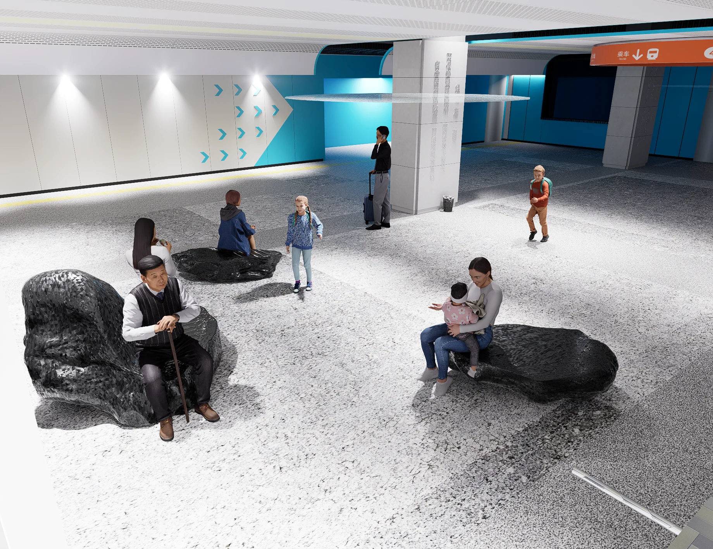
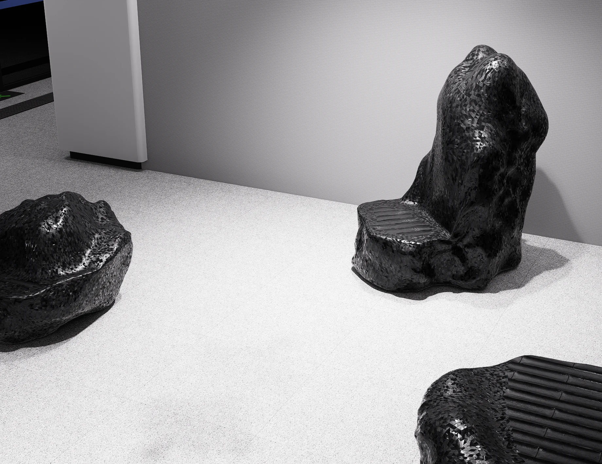
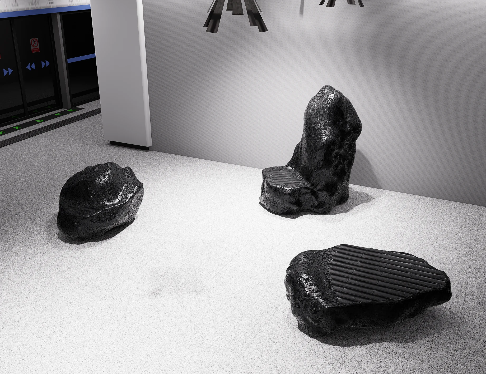
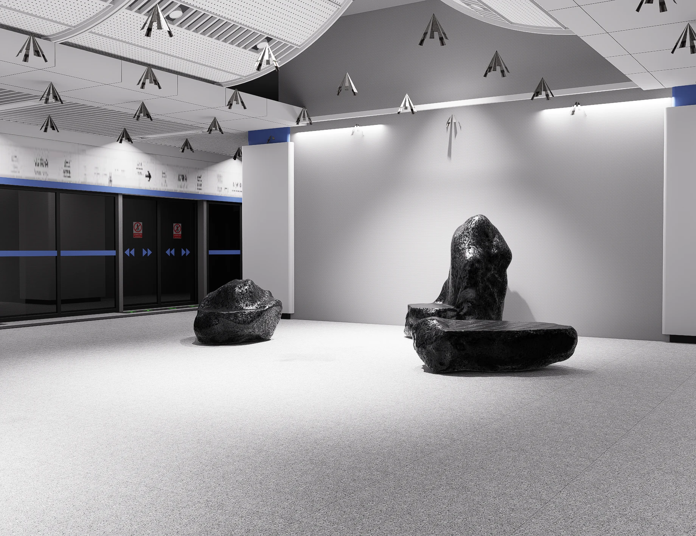
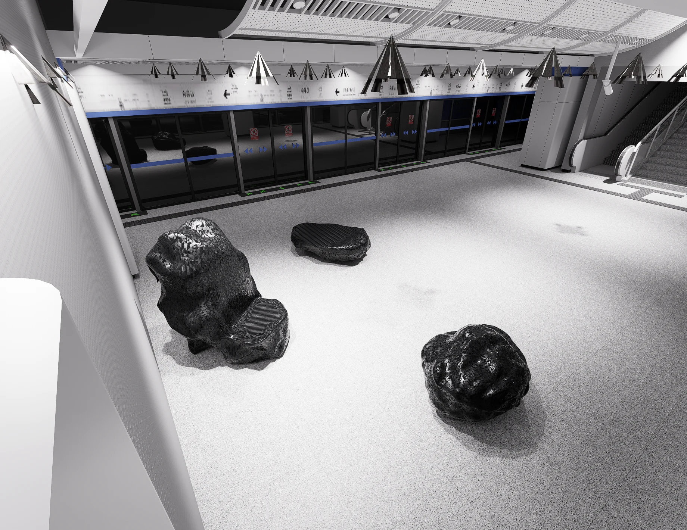
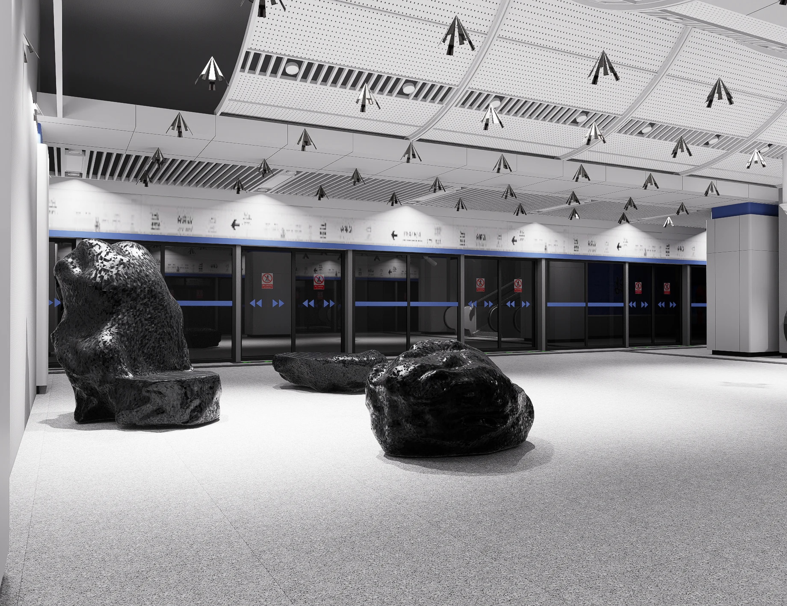
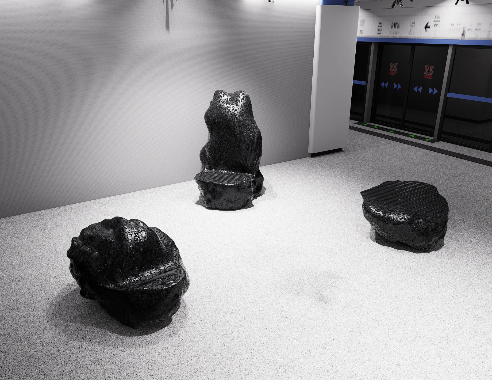
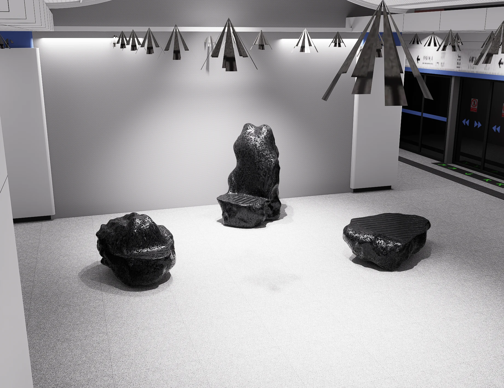

Rocky Coast Seat
Public Art / Spatial Design · 2024

Overview
Rocky Coast Seat is a public art and seating proposal for Shenzhen Metro. Drawing on the landscape of Shenzhen Bay, it connects rocks, waves and urban commuting, creating opportunities to pause within a fast-moving transport environment.
Bring a coastal pause into everyday routes
Rock-like seats become usable art installations and visual markers. Grouped arrangements consider both solitary pauses and shared use, while coastal references introduce a calmer atmosphere into the station.
Develop form, material and context
Digital sculpting and 3D modelling were used to explore silhouettes, seating surfaces and arrangements, including translucent and mirrored materials. Context renders examine the proposal against platform scale, passenger movement and ambient light.
My contribution
I contributed to concept development, modelling and digital sculpting, translating coastal references into forms that could be reviewed in a metro setting. The images show a design proposal and visualisations of form, use and material direction.
Gallery
Select an image to enlarge it. Use the left and right arrow keys to browse.







